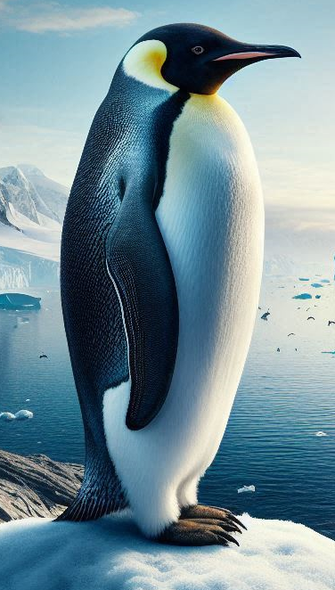
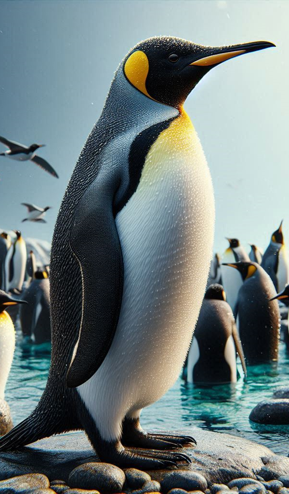
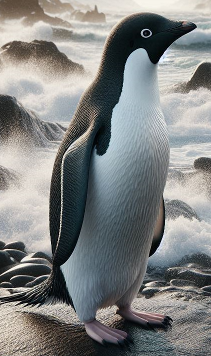
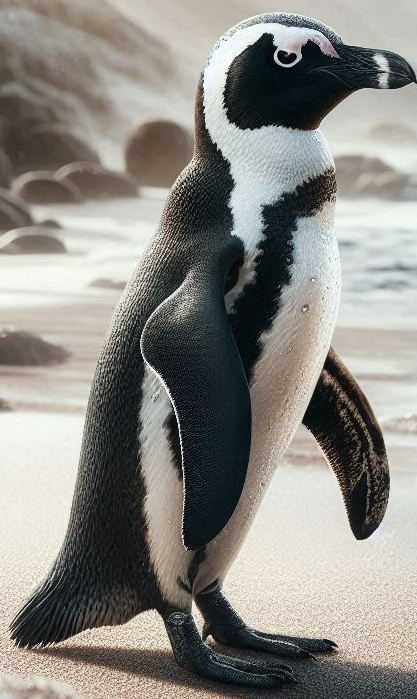
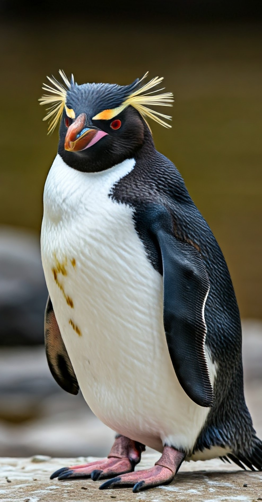
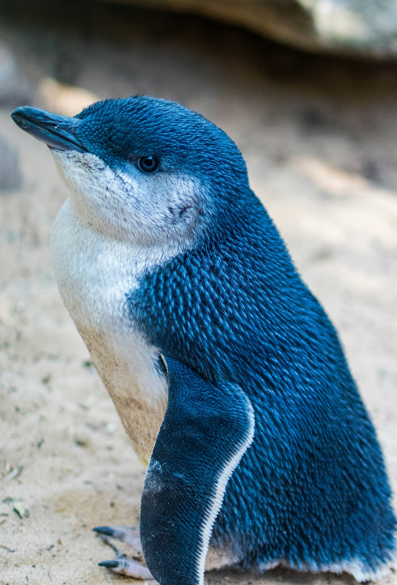

Pinguim Imperador

Pinguim Rei

Pinguim Adélia

Pinguim de Barbicha

Pinguim Gentoo

Pinguim Africano

Pinguim de Humboldt

Pinguim de Magalães

Pinguim de Galápagos

Pinguim de Crista Ereta
Pinguim das Snares
Pinguim de Fiordland

Pinguim Saltador da Rocha

Pinguim Macaroni
Pinguim Real

Pinguim de Olho Amarelo

Pinguim Fada
| Foto | Nome | Tipo | Tamanho | Local | Onde nada? | Extra |
|---|---|---|---|---|---|---|
| Pinguim Imperador | Os Grandes Pinguins | 1.30m | Antártica | Águas Frias | Super Mergulhadores | |
| Pinguim Rei | Os Grandes Pinguins | 90cm | Ilhas Sub-Antárticas | Águas Frias | ||
| Pinguim de Adélia | Calda de Escovinha | 70cm | Antártica | Águas Frias | Poucas Ideias | |
|
Pinguim de Barbicha | Calda de Escovinha | 75cm | Ilhas Sub-Antárticas | Águas Frias | Super Sonequinha |
|
Pinguim Gentoo | Calda de Escovinha | 80cm | Ilhas Sub-Antárticas | Águas Frias | |
| Pinguim Africano | Forma de Cunha | 65cm | África do Sul | Águas Quentes | Sons Estranhos | |
|
Pinguim de Humboldt | Forma de Cunha | 65cm | Costa Sulamericana | Águas Quentes | |
|
Pinguim de Magalhães | Forma de Cunha | 65cm | Costa Sulamericana | Águas Frias | |
|
Pinguim de Galápagos | Forma de Cunha | 45cm | Ilhas Galápagos | Águas Quentes | |
| Foto | Pinguim de Crista Ereta | Pinguins de Crista | 57cm | Ilhas Sub-Antárticas | Águas Frias | |
| Foto | Pinguim das Snares | Pinguins de Crista | 47cm | Ilhas Snares | Águas Frias | |
| Foto | Pinguim de Fiordland | Pinguins de Crista | 47cm | Nova Zelândia | Águas Quentes | |
| Pinguim Saltador da Rocha | Pinguins de Crista | 45cm | Ilhas Sub-Antárticas | Águas Frias | ||
|
Pinguim Macaroni | Pinguins de Crista | 60cm | Ilhas Sub-Antárticas | Águas Frias | |
| Foto | Pinguim Real | Pinguins de Crista | 60cm | Ilha Macquarie | Águas Frias | |
|
Pinguim de Olho Amarelo | Grande Mergulhador | 60cm | Nova Zelândia | Águas Quentes | |
|  | Pinguim Azul | Pequeno Mergulhador | 35cm | Nova Zelândia/Austrália | Águas Quentes |